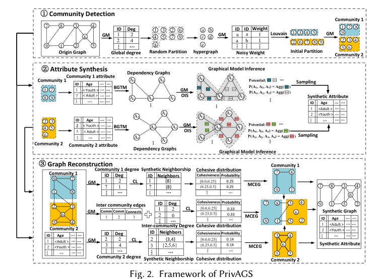

PrivAGS: Differentially Private Attributed Graph Synthesis
ACM SIGMOD 2026

Abstract
Attributed graphs are extensively utilized in marketing, friend recommendations, disease prediction, etc. In attributed graphs, nodes are associated with attributes to enrich the graph representation, while edges indicate relationships between nodes. However, ensuring data privacy when publishing attributed graphs is a significant challenge due to the sensitive nature of both attributes and relationships. Existing methods fail to preserve graph structures effectively and neglect correlations among node attributes, leading to diminished utility for published synthetic graphs. To address these issues, we propose PrivAGS, a framework for publishing attributed graphs with Rényi Differential Privacy (RDP) guarantees. PrivAGS reconstructs graph structures and attributes based on community structures to capture tightly connected features. We propose a bounded Gaussian threshold mechanism to preserve attribute correlations and utilize probabilistic graph models with optimized inference structures to infer distributions and release node attributes. Additionally, PrivAGS introduces a new structural model, MCEG, to capture clustering structures and enable efficient graph reconstruction. Extensive experiments on five real-world datasets show that PrivAGS generates privacy-preserving, high-utility synthetic data.
Resources
Citation
@inproceedings{YCZGWX26,
author = {Shuzhan Ye and Lu Chen and Zhikun Zhang and Yunjun Gao and Yuxiang Wang and Xiaoliang Xu},
title = {{PrivAGS: Differentially Private Attributed Graph Synthesis}},
booktitle = {{SIGMOD}},
publisher = {ACM},
year = {2026},
}